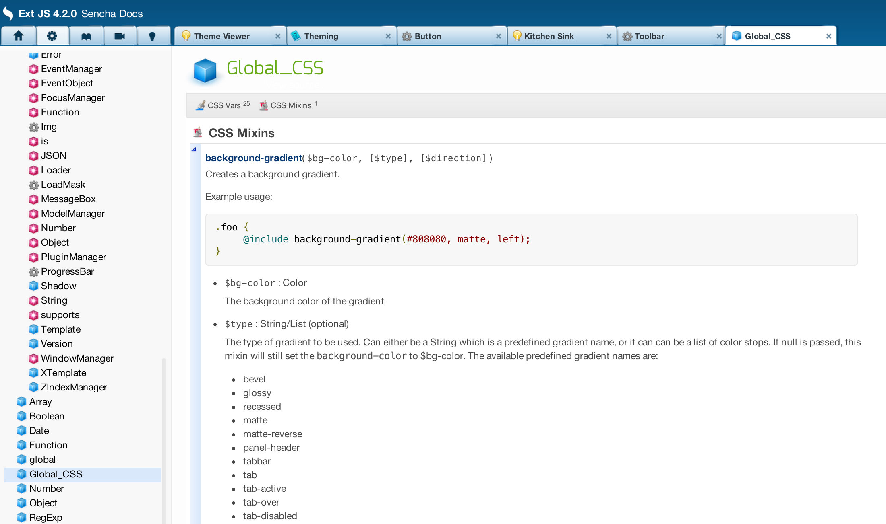
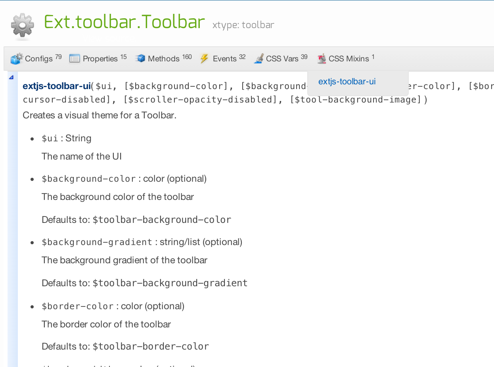

Implementing Panel UIs
Implementing Toolbar UIs
Implementing Window UIs
Implementing Button UIs
As we learned from the lecture, Sass mixins can be very handy:
@mixin custom-button-ui($color) {
background-color: $color;
&:hover {
background-color: lighten($color, 20%);
}
}
.x-btn.custom {
@include custom-button-ui(red)
}
.x-btn.custom { background-color: red; }
.x-btn.custom:hover{ background-color: #ff6666; }
Sencha has their own Sass mixins set in the Neutral theme. Therefore we can use these mixins (sencha uis) to customize our own skins.
For example, Sencha UIs can be handy for when you have a blue Neptune theme and only some toolbars needs to be green instead of blue.

extjs-toolbar-ui(
'greentoolbar',
$background-color: 'green'
//more configs
);
{
xtype: 'toolbar',
ui: 'greentoolbar',
//more configs
}
.green {
background: 'green';
}
{
xtype: 'toolbar',
cls: 'green',
//more configs
}
Creates a new skin
Set every CSS rule for this specific component
Automatically cross browser compatible .Disadvantages
Can increase the file size of your CSS
Can be difficult to implement
Easy solution
Won’t increase the CSS much .Disadvantages
Overwrites are visible in the compiled CSS
Hard to maintain
You will need to understand the Ext JS DOM
Sencha UI mixins are great when these are repetitive used in your theme. For example: a blue theme, that has blue and red buttons. CSS overwrites are handy to make a certain component unique. For example: on the start screen, the new button is bigger and has a different color.
Global Mixins
Component Mixins
But there is just one global mixin…
http://localhost/extjs4.2.2/docs/#!/api/Global_CSS
packages/<theme-name>/sass/etc/all.scss
bg-color: HEX color code
gradient: Choose gradient type from list (see docs)
direction: (optional) left or top.
.app {
@include background-gradient(#808080, matte, left);
}
http://docs.sencha.com/extjs/4.2.1/#!/api/Global_CSS-css_mixin-background-gradient
Ext.button.Button
Ext.container.ButtonGroup
Ext.panel.Panel
Ext.tab.Panel
Ext.tab.Bar
Ext.tab.Tab
Ext.tip.Tip
Ext.toolbar.Toolbar
Ext.window.Window
Ext.ProgressBar
packages/<theme-name>/sass/etc/all.scss
We have seen that this file grows and it’s getting harder to maintain. When you want to structure your Stylesheets, a better a location to save global vars would be:
packages/<theme-name>/sass/src/Component.scss
You can figure out how to configure the mixins by checking the API Docs.
packages/<theme-name>/sass/src/panel/Panel.scss
@mixin extjs-panel-ui(
$ui-label,
$ui-border-color: $panel-border-color,
$ui-border-radius: $panel-border-radius,
$ui-border-width: $panel-border-width,
$ui-padding: 0,
$ui-header-color: $panel-header-color,
$ui-header-font-family: $panel-header-font-family,
$ui-header-font-size: $panel-header-font-size,
$ui-header-font-weight: $panel-header-font-weight,
$ui-header-line-height: $panel-header-line-height,
$ui-header-border-color: $panel-header-border-color,
$ui-header-border-width: $panel-header-border-width,
$ui-header-border-style: $panel-header-border-style,
$ui-header-background-color: $panel-header-background-color,
$ui-header-background-gradient: $panel-header-background-gradient,
$ui-header-inner-border-color: $panel-header-inner-border-color,
$ui-header-inner-border-width: $panel-header-inner-border-width,
$ui-header-text-padding: $panel-header-text-padding,
$ui-header-text-transform: $panel-header-text-transform,
$ui-header-padding: $panel-header-padding,
$ui-header-icon-width: $panel-header-icon-width,
$ui-header-icon-height: $panel-header-icon-height,
$ui-header-icon-spacing: $panel-header-icon-spacing,
$ui-header-icon-background-position: $panel-header-icon-background-position,
$ui-header-glyph-color: $panel-header-glyph-color,
$ui-header-glyph-opacity: $panel-header-glyph-opacity,
$ui-tool-spacing: $panel-tool-spacing,
$ui-tool-background-image: $panel-tool-background-image,
$ui-body-color: $panel-body-color,
$ui-body-border-color: $panel-body-border-color,
$ui-body-border-width: $panel-body-border-width,
$ui-body-border-style: $panel-body-border-style,
$ui-body-background-color: $panel-body-background-color,
$ui-body-font-size: $panel-body-font-size,
$ui-body-font-weight: $panel-body-font-weight,
$ui-background-stretch-top: $panel-background-stretch-top,
$ui-background-stretch-bottom: $panel-background-stretch-bottom,
$ui-background-stretch-right: $panel-background-stretch-right,
$ui-background-stretch-left: $panel-background-stretch-left,
$ui-include-border-management-rules: $panel-include-border-management-rules,
$ui-wrap-border-color: $panel-wrap-border-color,
$ui-wrap-border-width: $panel-wrap-border-width
);
http://docs.sencha.com/extjs/4.2.1/#!/api/Ext.panel.Panel-css_mixin-extjs-panel-ui
packages/<theme-name>/sass/src/window/Window.scss
@mixin extjs-window-ui(
$ui-label,
$ui-padding: $window-padding,
$ui-border-radius: $window-border-radius,
$ui-border-color: $window-border-color,
$ui-border-width: $window-border-width,
$ui-inner-border-color: $window-inner-border-color,
$ui-inner-border-width: $window-inner-border-width,
$ui-header-color: $window-header-color,
$ui-header-background-color: $window-header-background-color,
$ui-header-padding: $window-header-padding,
$ui-header-font-family: $window-header-font-family,
$ui-header-font-size: $window-header-font-size,
$ui-header-font-weight: $window-header-font-weight,
$ui-header-line-height: $window-header-line-height,
$ui-header-text-padding: $window-header-text-padding,
$ui-header-text-transform: $window-header-text-transform,
$ui-header-border-color: $ui-border-color,
$ui-header-border-width: $window-header-border-width,
$ui-header-inner-border-color: $window-header-inner-border-color,
$ui-header-inner-border-width: $window-header-inner-border-width,
$ui-header-icon-width: $window-header-icon-width,
$ui-header-icon-height: $window-header-icon-height,
$ui-header-icon-spacing: $window-header-icon-spacing,
$ui-header-icon-background-position: $window-header-icon-background-position,
$ui-header-glyph-color: $window-header-glyph-color,
$ui-header-glyph-opacity: $window-header-glyph-opacity,
$ui-tool-spacing: $window-tool-spacing,
$ui-tool-background-image: $window-tool-background-image,
$ui-body-border-color: $window-body-border-color,
$ui-body-background-color: $window-body-background-color,
$ui-body-border-width: $window-body-border-width,
$ui-body-border-style: $window-body-border-style,
$ui-body-color: $window-body-color,
$ui-background-color: $window-background-color,
$ui-force-header-border: $window-force-header-border,
$ui-include-border-management-rules: $window-include-border-management-rules,
$ui-wrap-border-color: $window-wrap-border-color,
$ui-wrap-border-width: $window-wrap-border-width
);
http://docs.sencha.com/extjs/4.2.1/#!/api/Ext.window.Window-css_mixin-extjs-window-ui
packages/<theme-name>/sass/src/toolbar/Toolbar.scss
@mixin extjs-toolbar-ui
$ui,
$background-color: $toolbar-background-color,
$background-gradient: $toolbar-background-gradient,
$border-color: $toolbar-border-color,
$border-width: $toolbar-border-width,
$scroller-cursor: $toolbar-scroller-cursor,
$scroller-cursor-disabled: $toolbar-scroller-cursor-disabled,
$scroller-opacity-disabled: $toolbar-scroller-opacity-disabled,
$tool-background-image: $toolbar-tool-background-image
);
http://docs.sencha.com/extjs/4.2.1/#!/api/Ext.toolbar.Toolbar-css_mixin-extjs-toolbar-ui
$extjs-button-large-ui
$extjs-button-medium-ui
$extjs-button-small-ui
$extjs-button-toolbar-large-ui
$extjs-button-toolbar-medium-ui
$extjs-button-toolbar-small-ui
$extjs-button-ui
Note: this mixin is not scale aware and therefore less common.
By default the scale config in an Ext.button.Button defaults to small.
Which will use the $extjs-button-small-ui.
Also the $extjs-button-ui mixin has more more required arguments.
packages/<theme-name>/sass/src/button/Button.scss
http://docs.sencha.com/extjs/4.2.1/#!/api/Ext.button.Button-css_mixin-extjs-button-ui